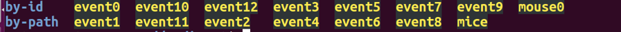
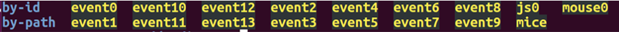
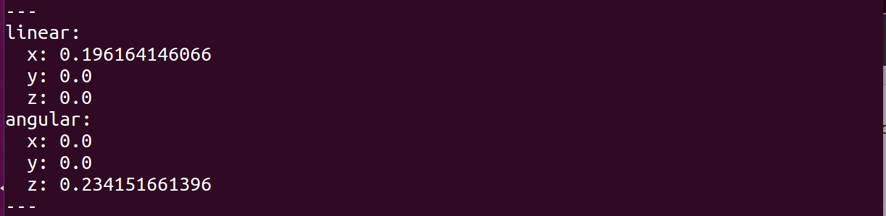
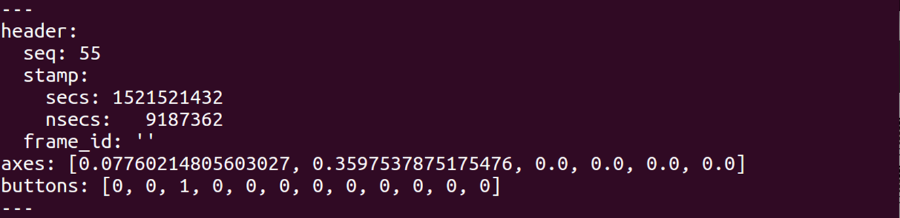

ゲームパッドで走行しよう
ライトローバーに市販のゲームパッドを接続して走行させてみましょう。
使用できるゲームパッドについて
アナログスティック入力機能を有するUSB接続のもの、またはPS4のコントローラ（DualShock®4）を、お客様にてご用意ください。ゲームパッドの種類によっては、デバイスドライバが非対応で動作しない可能性もございます。
DualShock®4の無線接続
DualShock®4（以下DS4）をBluetooth接続で使用される場合は、以下の方法でセットアップおよび接続を行ってください。USBで接続される場合はこの手順は不要です。
-
ds4drvのインストール
DS4とRaspberry PiをペアリングするためのPythonドライバds4drvをpipでインストールします。
ターミナルを立ち上げ以下のコマンドを入力してください。sudo pip install ds4drv一度インストールを行えば、次回からは以降の手順だけを行うだけで使用できます。
-
ds4drvの起動とペアリング
ターミナルに以下のコマンドを入力し、ds4drvを起動します。sudo ds4drv以下のような表示が出れば、ペアリング待機状態です。
[info][bluetooth] Scanning for devicesDS4をペアリングモードにします。
DS4の端面にあるライトバーが白く点滅するまで、「PSボタン」と「SHARE」ボタンを押し続けます。
ライトが点滅したらペアリングモードになっていますので、ボタンから指を離してください。
ds4drvを起動したターミナルを確認し、以下のような表示になっていれば、接続完了です。[info][bluetooth] Found device xx:xx:xx:xx:xx:xx [info][controller 1] Connected to Bluetooth Controller (xx:xx:xx:xx:xx:xx)ds4drvは引き続き起動し続けてください。
Joyパッケージのセットアップ
ROSでゲームパッドを使うためのパッケージ「Joy」をセットアップします。
バイナリでは配布されていないため、ソースからビルドします。
インターネット接続が必要です。
ターミナルで以下のコマンドを入力し、catkin_wsへ移動します。
cd /home/pi/catkin_ws/src
次のコマンドで、GithubからJoyパッケージのソースをクローンします。
git clone https://github.com/ros-drivers/joystick_drivers.git
rosdepを使って、依存関係を解決します。
rosdep install -i --from-paths ~/catkin_ws/src/joystick_drivers/
ビルドします。
catkin build
セットアップは以上で完了です。
ゲームパッドの接続とデバイスファイルパスの確認
Raspberry Piにゲームパッドを接続しない状態で、ターミナルで以下のコマンドを入力してください。
ls /dev/input
入力デバイスとして認識されていものが一覧で表示されます。
※表示内容は環境によって変わります。

Raspberry PiにUSBでゲームパッドを接続するか、DS4をbluetoothで接続してください。
ターミナルで再び以下のコマンドを入力します。
ls /dev/input

接続前後を比較すると「js0」が増えていることが分かります。
これがゲームパッドのデバイスファイルです。
この場合は、ファイルのパスは“/dev/input/js0”となります。
デバイスファイル名は、機種やゲームパッドを接続するタイミングによって変化しますので、都度確認してください。
デバイスファイルパスをパラメータとして設定
確認したゲームパッドのデバイスファイルパスを、ゲームパッド操作サンプルのlaunchファイル「pos_joycon.launch」にパラメータとして設定します。
launchファイルをgeditで開きましょう。
gedit /home/pi/catkin_ws/src/lightrover_ros/launch/pos_joycon.launch
ファイルマネージャで開いていただいても構いません。
次の行を探してください。
<param name=”dev” type=”string” value=“/dev/input/js0” />
launchファイルでは、param要素を用いることでパラメータを設定することができます。
name属性がパラメータ名、value属性がパラメータ値です。
“value=”以下を先ほど取得したゲームパッドのデバイスファイルパスに書き換えてください。
書き換えが完了したら保存して閉じてください。
移動量指令値の確認
ライトローバーへの移動量指令値が正しく出力されるか確認します。
ターミナルで次のコマンドを実行し、joycon_test.launchを呼び出します。
roslaunch lightrover_ros joycon_test.launch
このlaunchファイルではライトローバーは走行しません。
コントローラからの入力に対して、移動指令が正しく出力されているか確認してみましょう。新しくターミナルをたち上げ、次のコマンドを実行してください。
rostopic echo /rover_drive
“rostopic echo トピック名”は、ノード間でやり取りされているメッセージを見ることができるコマンドです。
ここでは、トピック名に“/rover_drive”を指定して、ライトローバーの移動速度指令値[m/s]と、旋回速度指令値[rad/s]を確認します。
アナログスティックを動かし、rostopic echoの応答を確認しましょう。

アナログスティックを動かすことで、上図のようにlinear.xおよびangular.zの値が変化すれば、指令値は正しく出力されています。
初期状態では、linear.xの最大値は0.1m/s、angular.zの最大値は2.0rad/sに設定されています。
linearは並進移動量を、angularは旋回量を表しており、x,y,zはそれぞれ座標軸です。
「何も値が出てこない場合」や「片方の値しか変化しない場合」は、操作方法のカスタマイズが必要です。
あるいは、値は両方とも変化したが、アナログスティックの割り当てが不自然で操作しづらいときなども、操作方法のカスタマイズを行ってください。
操作方法のカスタマイズ
「rover_gamepad.py」を編集することで、操作方法をカスタマイズすることができます。
以下のコマンドでファイルを開きましょう。
gedit ~/catkin_ws/src/lightrover_ros/scripts/rover_gamepad.py
次のカ所を見つけてください。
def call_back(data):
global speed
speed.linear.x = data.axes[1]*0.1
speed.angular.z = data.axes[2]*2.0
詳細を解説します。
def call_back(data):
call_backは特定のメッセージが配信された際に呼び出される関数です。
rover_gamepad.pyでは、joy_nodeから配信される/joyメッセージをトリガーにして実行されるよう記述されています。
メッセージは引数（data）に格納されます。
speed.linear.x = data.axes[1]*0.1
speed.angular.z = data.axes[2]*2.0
ここで、アナログスティックの入力をもとに移動速度と旋回速度の指令値を計算しています。
speedは/rover_driveに使用しているgeometry_msgs/Twist型のオブジェクトです。
linear.xはローバーの前後方向の並進移動速度、angular.zはローバーの旋回軸周りの旋回速度です。
data.axesにはアナログスティックの入力値が含まれています。
アナログスティックのどの方向の入力が配列の何番目に入っているかはゲームパッドによって差があるため、確認が必要です。
joycon_test.launchを終了してしまった場合は再度起動してください。
roslaunch lightrover_ros joycon_test.launch
次のコマンドでゲームパッドからの入力値を確認します。
rostopic echo /joy

上図は“rostopic echo /joy”で、ゲームパッドの3番ボタンを押しながらアナログスティックを倒した際の応答例です。
アナログスティックの入力値はaxes配列に、ボタンの入力値はbuttons配列に格納されていることが分かります。
axes配列要素のうち、ライトローバーの前後移動に使いたい要素と、左右旋回に使いたい要素がそれぞれ何番目に入っているかを確認し、rover_gamepad.pyに設定します。
例えば、前後移動に使いたい要素が0番目に、左右旋回に使いたい要素が2番目に入っている場合は以下のようになります。
speed.linear.x = data.axes[0]*0.1
speed.angular.z = data.axes[2]*2.0
また、axesと掛けている"0.1", "2.0"を変更することで最高速度を変更することが可能です。
ゲームパッド操作サンプルの実行
いよいよライトローバーをゲームパッドで動かしてみましょう。
USBゲームパッドまたは、DS4を接続し、以下のコマンドを実行してください。
roslaunch lightrover_ros pos_joycon.launch
ゲームパッドを操作して、ライトローバーを走行させてみましょう。
机の上などで試す場合は、落下しないようご注意ください。